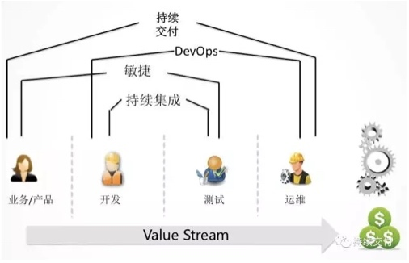

- 00 开篇词 带给你不一样的运维思考.md
- 01 为什么Netflix没有运维岗位？.md
- 02 微服务架构时代，运维体系建设为什么要以应用为核心？.md
- 03 标准化体系建设（上）：如何建立应用标准化体系和模型？.md
- 04 标准化体系建设（下）：如何建立基础架构标准化及服务化体系？.md
- 05 如何从生命周期的视角看待应用运维体系建设？.md
- 06 聊聊CMDB的前世今生.md
- 07 有了CMDB，为什么还需要应用配置管理？.md
- 08 如何在CMDB中落地应用的概念？.md
- 09 如何打造运维组织架构？.md
- 10 谷歌SRE运维模式解读.md
- 11 从谷歌CRE谈起，运维如何培养服务意识？.md
- 12 持续交付知易行难，想做成这事你要理解这几个关键点.md
- 13 持续交付的第一关键点：配置管理.md
- 14 如何做好持续交付中的多环境配置管理？.md
- 15 开发和测试争抢环境？是时候进行多环境建设了.md
- 16 线上环境建设，要扛得住真刀真枪的考验.md
- 17 人多力量大vs.两个披萨原则，聊聊持续交付中的流水线模式.md
- 18 持续交付流水线软件构建难吗？有哪些关键问题？.md
- 19 持续交付中流水线构建完成后就大功告成了吗？别忘了质量保障.md
- 20 做持续交付概念重要还是场景重要？看笨办法如何找到最佳方案.md
- 21 极端业务场景下，我们应该如何做好稳定性保障？.md
- 22 稳定性实践：容量规划之业务场景分析.md
- 23 稳定性实践：容量规划之压测系统建设.md
- 24 稳定性实践：限流降级.md
- 25 稳定性实践：开关和预案.md
- 26 稳定性实践：全链路跟踪系统，技术运营能力的体现.md
- 27 故障管理：谈谈我对故障的理解.md
- 28 故障管理：故障定级和定责.md
- 29 故障管理：鼓励做事，而不是处罚错误.md
- 30 故障管理：故障应急和故障复盘.md
- 31 唇亡齿寒，运维与安全.md
- 32 为什么蘑菇街会选择上云？是被动选择还是主动出击？.md
- 33 为什么混合云是未来云计算的主流形态？.md
- 35 以绝对优势立足：从CDN和云存储来聊聊云生态的崛起.md
- 36 量体裁衣方得最优解：聊聊页面静态化架构和二级CDN建设.md
- 37 云计算时代，我们所说的弹性伸缩，弹的到底是什么？.md
- 38 我是如何走上运维岗位的？.md
- 39 云计算和AI时代，运维应该如何做好转型？.md
- 40 运维需要懂产品和运营吗？.md
- 41 冷静下来想想，员工离职这事真能防得住吗？.md
- 42 树立个人品牌意识：从背景调查谈谈职业口碑的重要性.md
- 划重点：赵成的运维体系管理课精华（一）.md
- 划重点：赵成的运维体系管理课精华（三）.md
- 划重点：赵成的运维体系管理课精华（二）.md
- 新书 《进化：运维技术变革与实践探索》.md
- 特别放送 我的2019：收获，静静等待.md
- 结束语 学习的过程，多些耐心和脚踏实地.md
12 持续交付知易行难，想做成这事你要理解这几个关键点
前面几篇文章，我们介绍了非常基础的运维建设环节。如果我们想要这些运维基础建设发挥出更大的作用和价值，就需要针对运维场景进行场景化设计和自动化，让效率和稳定性真正提升上来。也就是说，把基础的事情做好之后，我们就要进入效率提升的运维场景自动化阶段了。
在这一阶段，我个人的经验和建议是，首先要把持续交付做好。
为什么要先做持续交付？如果说我们完成了一些运维职责范围内的自动化工具，提升的是运维效率的话，那么，做持续交付就是提升整个研发体系效率的关键。
做持续交付的价值表现在哪里？
持续交付覆盖了应用的整个生命周期，涉及产品、开发、测试、运维以及项目管理等相关方面。从生命周期出发，自然就会牵出整个自动化的全貌，就会有从全局着眼的规划设计，这时无论是在开发还是运维过程中存在的问题，都会完完整整地暴露出来。那么，应该以什么样的主线开展？各方应该如何配合？应该以怎样的优先级明确任务？这些问题就都清楚了。同时，也避免了各个环节只把注意力放在各自职责范围内的事情上，而忽略了整体的配合。所以，做好持续交付，对于整个研发体系意义重大。
我们面临的实际场景是怎样的？
我们知道，随着业务复杂度的升高，不管是分层架构，还是微服务架构，都会带来一个最明显的变化，那就是应用数量增多，有时甚至多达几十个、上百个。不同的应用就有不同的代码、依赖和配置，为了协同多应用之间的在线发布，我们还要做到服务能够平滑地进行上下线切换。同时，为了最大限度地降低发布风险，我们还需要进行多环境下的验证，以及上线后的灰度策略等等。
应对这一切，如果只是手工维护，或者利用简单的工具脚本进行维护，都不能保证正常运作。这个时候，我们必须有一系列的流程、机制和工具链来支持和保障。
由杰斯·赫布尔（Jez Humble）、戴维·法利（ David Farley）编著，乔梁老师翻译的《持续交付：发布可靠软件的系统方法》（Continuous Delivery: Reliable Software Releases through Build, Test, and Deployment Automation）这本书，针对持续交付的过程、方法和指导建议几个方面做了非常详细的描述。我向你强烈推荐这本书，不过，这本书的内容并不仅仅针对于微服务架构。
接下来我就分享如何把持续交付的理念和实践相结合，讲一讲在实践过程中，做好持续交付最关键的几步是什么，以及具体应该怎么做。
什么是持续交付？
我们现在经常会接触到这些名词，比如持续交付、持续集成、持续部署、持续发布、DevOps和敏捷开发等等。大多有关持续交付的分享或文章中，这些名词经常会同时出现。它们之间到底有什么区别？我自己之前也弄不清楚，直到看到乔梁老师的这张图。

这里我重点解释一下持续交付这个概念，通俗地说，持续交付代表着从业务需求开始到交付上线之后的端到端的过程。后面我们会针对这个过程的关键环节进行分享。
受篇幅所限，其它名词就先不作过多解释了，你可以看图自己体会，都不难理解。后面针对某些概念我们还会提到。
持续交付的关键点
可以说，这一部分也是我们后面将要分享内容的提纲。
从前面那张图来看，做持续交付需要端到端考虑，同时还要有一些非常关键的准备工作。我把这些工作大致分为以下几个部分。
1. 配置管理
这一部分会利用到我们前面讲过的标准化和CMDB打下的基础，同时还会有更大的外延，比如环境配置、代码配置以及依赖管理等等。
配置管理是非常关键的基础工作。有一点值得注意，那就是标准化是一个持续的过程。我们不太可能在一开始就把所有运维对象、属性和关系全部都考虑清楚，面面俱到是不太现实的，所以，一定要具备标准化的意识，在开展运维工作的过程中，持续不断地用这个思路去标准化新出现的对象。先标准，再固化，然后自动化。
2. 需求拆解
需求拆解这个工作跟业务需求部门和业务开发有更直接的关系。在这里，运维需要做的是，明确需求拆解的粒度和我们最终发布上线的粒度相匹配。
3. 提交管理
需求拆解完成后，就进入到开发阶段，开发完成后向代码库中提交代码，这个过程中代码分支的合并策略选择就是提交管理。
4. 构建打包
这一部分是指将提交后的代码编译成可发布的软件包。
5. 自动化测试
自动化测试包括功能测试和非功能性测试。对于运维来说，会更注重非功能方面的特性，所以后面我会着重讲非功能性相关的测试环节。
6. 部署发布
这一部分是指发布到不同的环境，如开发环境、预发环境、线上Beta以及线上全量环境。针对不同的环境，发布策略和注意事项也会不同。
以上是一个完整的持续交付过程中最重要的几个环节，后面我们分篇进行详细介绍。
从我自己的实践经验来看，配置管理、提交管理、构建和部署发布是持续交付的重中之重，是关键路径，是从开发代码开始，到发布上线的必经之路。当时，因为这几个环节出现了问题，不能解决，运维同学经常做手工发布，这样效率就跟不上，还经常出现各种问题。
后来，我们就是先从这几个环节入手，把阻塞的问题解决掉，然后在这个主流程上不断增加外围能力，让整个流程的功能更加丰富和全面。整个系统也从原来的只具备持续部署发布功能的平台，逐步演进为具有持续交付能力的平台。由此可见，我们实现持续交付的过程，也不是一蹴而就的，而是在摸索中逐步演进完善的。
最后，给你留两个思考题。
- 先放下持续交付的概念，你所理解或经历的从开发完代码到发布到线上这个过程中，会有哪些环节？和我列出来的这几部分是否有相同之处？
- 持续交付是谁的持续交付，它的主体是谁？或者有哪些主体？
欢迎你留言与我讨论。
如果今天的内容对你有用，也欢迎你分享给身边的朋友，我们下期见！
© 2019 - 2023 Liangliang Lee. Powered by gin and hexo-theme-book.